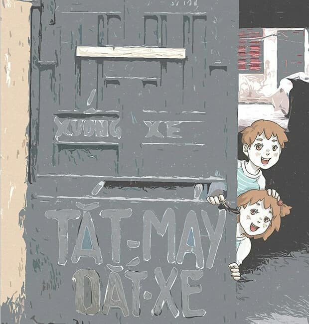

Đội bóng của HLV Mikel Arteta tạo ra nhiều cột mốc đáng nhớ sau chiến thắng 4-1 trước Crystal Palace ở vòng 28 Ngoại hạng Anh hôm 19/3.

"Pháo thủ" trở thành đội đầu tiên trong lịch sử Ngoại hạng Anh thắng 9 trận derby trong một mùa giải. Arsenal đánh bại phần lớn các đội bóng ở London mùa này. Họ giành được 28 trong tổng số 30 điểm tối đa tại các trận derby London Ngoại hạng Anh mùa này.

Danh sách các bại tướng của Arsenal trong những trận derby London mùa này bao gồm West Ham, Brentford, Chelsea, Tottenham Hotspur (2 lần), Crystal Palace (2 lần), Fulham (2 lần). Lần mất điểm duy nhất của "Pháo thủ" là ở trận hòa 1-1 trước Brentford vào tháng 2.

Sau 28 vòng đấu tại Ngoại hạng Anh mùa này, Arsenal cũng giành chiến thắng thứ 22, thành tích tốt nhất CLB này có được kể từ khi chơi ở hạng đấu cao nhất xứ sương mù. Số điểm 69 sau 28 vòng cũng là thành tích tốt nhất đội chủ sân Emirates có được trong lịch sử CLB này.

Với hai bàn thắng và 1 kiến tạo vào lưới Palace, Bukayo Saka (12 bàn, 10 kiến tạo) cũng trở thành cầu thủ Ngoại hạng Anh đầu tiên đạt hơn 10 kiến tạo và hơn 10 bàn thắng mùa này. Anh cũng là cầu thủ Arsenal đầu tiên sau 6 năm làm được điều này. Người gần nhất làm được điều này cho Arsenal là Alexis Sanchez ở mùa giải 2016/17.
Gabriel Martinelli ghi bàn ở trận này và cán mốc 13 pha lập công tại Ngoại hạng Anh 2022/23. Anh cũng chỉ cần thêm 2 bàn nữa để san bằng kỷ lục cầu thủ Brazil ghi nhiều bàn nhất trong một mùa giải Premier League. Roberto Firmino đang giữ kỷ lục này với 15 bàn cho Liverpool ở mùa 2017/18.
Arsenal tạo ra khoảng cách 8 điểm với đội xếp thứ hai Man City, nhưng chơi nhiều hơn đội đương kim vô địch một trận. Đội bóng của HLV Arteta sẽ còn 10 trận nữa tại Ngoại hạng Anh mùa này để giải cơn khát vô địch kéo dài từ năm 2004.
Đây cũng là lần đầu tiên kể từ khi dẫn dắt Arsenal, HLV Mikel Arteta thắng 6 trận liên tiếp tại Ngoại hạng Anh. Nếu vô địch nước Anh mùa này, chiến lược gia người Tây Ban Nha sẽ trở thành HLV thứ bảy trong lịch sử "Pháo thủ" lên ngôi cao nhất nước Anh, sau các huyền thoại như Herbert Chapman, George Allison, Tom Whittaker, Bertie Mee, George Graham, Arsene Wenger.